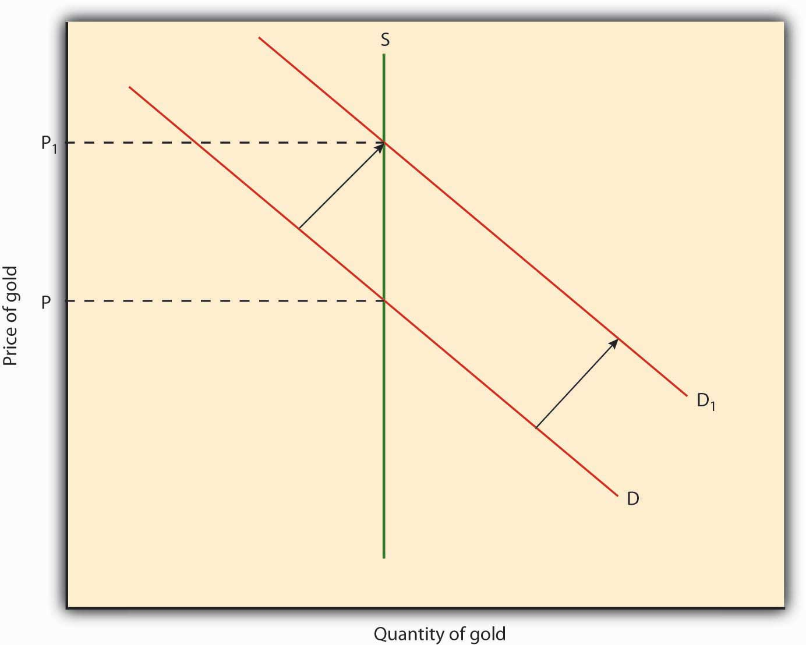

Truth be told, the people who used lion teeth or rocks with holes in them as money might find moderns a bit off their rockers for using money created by the government. The reason is simple: commodity monies are self-equilibrating, but government fiat monies are not because they are sometimes subject more to the whims of politicians and bureaucrats than to the forces of supply and demand, as we will see in a later chapter. Commodity money systems can self-equilibrate, or essentially run themselves, because commodities are scarce (but as noted above, not necessarily rare). In other words, the opportunity costs of their acquisition and production are greater than zero. That means that at some point people will find it just as profitable to produce nonmonetary goods as to produce money directly. At that point, money creation naturally ceases until more is needed. One way to see this is to consider the incentives of individuals to produce money or nonmonetary goods in a very simple economy.
Suppose, for example, that clamshells are money and that ten can be found in one hour, on average. Suppose too that people on average can also produce a bow in two hours, an arrow in one hour, and a dead rabbit in three hours. In that situation, an arrow would cost ten clamshells, a bow twenty clamshells, and a rabbit thirty clamshells because at those prices people would be indifferent whether they spent, say, six hours collecting clamshells (6 × 10 = 60), making arrows (6 × 10 = 60), making bows ([6/2 hours per bow] = 3 bows produced in 6 hours; 3 × 20 = 60), or hunting rabbits ([6/3] = 2; 2 × 30 = 60). If clamshells are somehow removed from circulation (maybe by being traded away), it will be more remunerative to harvest clamshells than to make bows or arrows or to fricassee rabbits until the supply of clamshells is restored, which should not be long. (In fact, if people expected the exodus of the clamshells, the adjustment might well be instantaneous.)
Commodity money systems also automatically adjust to structural changes in the economy. If it suddenly became easier to find clamshells, say, twenty in an hour, everybody would harvest clamshells until the clamshell prices of arrows, bows, and rabbits doubled, restoring equilibrium. If clamshell production dropped to five an hour, prices would also drop by half because no one would harvest clamshells when they could earn twice as many clamshells in an hour producing arrows, bows, or rabbits. If clamshell production remained steady but it became easier to produce bows, the only thing that would change would be the price of bows relative to the prices of arrows and rabbits, and not the price level, or all prices. For example, if it was possible to produce bows in 1.5 hours instead of 2, the price of bows would drop to 15 clamshells (when 10 clamshells can be harvested in an hour).
As noted earlier, gold is a very good commodity money in most respects and, like clamshells, its quantity is self-equilibrating. (If you wish, you can reread the previous two paragraphs substituting “grain of gold” for clamshell.) Early in the twentieth century, however, governments shifted away from its use, ostensibly because of competition from superior types of exchange medium and the inelasticity of its supply. When gold became more abundant and output remained constant, the price level increased because there was more money chasing the same amount of goods and services. When the quantity of gold remained constant and output increased, the price level declined because there was no longer enough gold around to maintain the former prices, as in Figure 3.5 "A higher price for gold means a lower price for everything else". By making each ounce of gold more valuable, thus increasing one’s ability to purchase more goods and services than formerly, the decline in prices should have triggered an immediate increase in gold production, thereby rendering the deflation, or reduction of the price level, mild and transitory, as in our hypothetical clam case above. Due to the difficulty of finding new veins of gold, however, changes in the price level were often prolonged.This chart depicts changes in the price level in the United States between 1865 and 1900, when the country’s unit of account was defined in gold. Note that prices fell in most years. That deflation led to a series of political upheavals that resulted in the formation of the Populist Party and a prolonged struggle among Silverites, who desired to raise prices by monetizing silver; Greenbackers, who sought to raise prices through the issuance of fiat money; and Gold Bugs, who insisted on maintenance of the status quo. The Wonderful Wizard of Oz, a children’s book by Frank Baum made legendary by a movie version starring Judy Garland as protagonist Dorothy, is an allegory depicting the major political divisions of the era. Oz is of course the abbreviation for ounce; the yellow brick road refers to the gold standard; the Emerald City symbolizes Greenbacks; and in the book, Dorothy’s slippers were silver, not ruby, as they were depicted in the movie. Figure 3.4 Changes in the U.S. price level, 1865–1900
Figure 3.5 A higher price for gold means a lower price for everything else
The end of gold’s reign was, in a sense, overdue. Gold’s monetary life had been extended by the invention and widespread use of credit money, including banknotes and deposits, because such money essentially rendered the gold supply more elastic. By the late seventeenth century, goldsmiths, skilled artisans who made gold watches and other auric goods, began to safeguard gold for their customers and to issue a form of representative money by issuing receipts to depositors. Like tobacco receipts, the gold receipts could be returned to the issuing goldsmith for gold. People often preferred to hold the receipts rather than the gold itself because they were even more portable and easily authenticated than the metal. So the receipts began to circulate as a medium of exchange. Credit money was born when the goldsmiths, now protobankers, discovered that due to the public’s strong preference for the receipts, they could issue notes to a greater value than the gold they had on physical deposit. They could therefore use the receipts to make loans or buy bonds or other income-generating assets.
By the eighteenth century, banks in Great Britain, the United States, and a few other places increased the elasticity of the supply of gold by engaging in just such fractional reserve banking. Consider the following bank balance sheetA financial statement showing the sum or stock of an economic entity’s assets (things owned) and liabilities (things owed). Assets should equal liabilities, including equity (aka capital or net worth).:
| Assets: | |
| Gold | 200 |
| Public securities | 100 |
| Loans | 600 |
| Office and real estate | 100 |
| Liabilities: | |
| Notes (receipts) | 900 |
| Equity | 100 |
Because most people preferred to hold notes and deposits instead of gold, the bank could hold only a small reserve of gold to pay to holders of its demand liabilities (notes and deposits) and earn seigniorage, or the profit from the issuance of money, on the rest.Seigniorage can be earned in several ways. One way is to earn interest on assets acquired with liabilities that pay no interest or, more generally, on the positive spread between return on assets and the cost of monetary liabilities. The Federal Reserve, for example, pays no interest on its notes or deposits but earns interest on the Treasury securities and other assets that it buys with its notes and deposits. Another way to earn seigniorage is to mint coins that have a higher face or nominal value than production cost. Debasing the coinage, or extracting seigniorage by increasing the nominal value of a given sum of gold or silver, was highly profitable and therefore a favorite sport of kings. Here only 200 (dollars or pounds or whatever) of gold did the work of 900 (the value of receipts or notes in circulation). Bankers essentially made gold less rare and also gained some control over its elasticity via the reserve ratio (reserves/monetary liabilities or 200/900), which was relatively unregulated by government at that time. Bankers could change the ratio as they saw fit, sometimes decreasing and sometimes increasing it, thereby changing the money supply, or the total quantity of money in the economy.
In Ithaca, New York, and hundreds of other communities worldwide, consortia of businesses issue zero-interest bearer paper notes. The notes are denominated in local units (Hours in Ithaca; Greenbacks, Berkshares, and other names elsewhere)en.wikipedia.org/wiki/Local_currency#Modern_local_currencies and are designed to circulate as cash, like Federal Reserve notes. In the United States, the issuer must redeem the notes for dollars (unit of account) upon demand at a fixed conversion rate. Each Ithaca Hour, for example, is equal to 10 USD. The community notes are not a legal tender, have no intrinsic value, and generally circulate in an extremely limited geographical area. The issuers often use Marxist rhetoric (workers create all value but get shafted by the “capitalist” political and economic system, etc.), claiming that holding the notes will help the local economy by keeping money invested locally. (For more details, browse www.ithacahours.com). What is really going on in Ithaca and the other community money centers?
The issuers of the notes are interested in earning seigniorage, or profits from the issuance of money. They act like fractional reserve bankers, issuing Hours in exchange for dollars, which they put out to interest. They don’t earn much, though, because most people are smart enough to realize their credit money is less liquid and more risky than other forms of credit money, like bank deposits, and much higher risk than fiat money, like Federal Reserve Notes. In fact, there is no good reason to hold such notes unless one believes (“buys into”) the dubious Marxist rhetoric that often accompanies them.
Since its invention, credit money has been extremely successful because it is an almost perfect medium of exchange. Take, for example, bank deposits. Essentially just an accounting entry crediting so much money (unit of account) to a person or organization, deposits are easily authenticated, perfectly uniform, divisible to fractions of a penny, highly portable via written or electronic orders, and extremely durable. Moreover, their supply is highly elastic because they can be created and destroyed at will. The usefulness of deposits is further extended by varying their characteristics to meet different risk, return, liquidity, and maturity preferences. The most common and familiar type of deposit, called a checking, transaction, or demand deposit account, pays no or relatively low interest, but funds can be withdrawn at any time via teller during banking hours, via ATM 24/7, or with a debit card or check. Other deposits, called time or savings deposits or certificates of deposit, pay relatively high interest but either cannot be withdrawn at all before a prespecified date or can be withdrawn only if the depositor suffers a penalty that wipes out much of the interest earned. Between those two extremes have emerged a variety of hybrids, like automatic transfer from savings (ATS)An account that automatically moves funds from your savings account if your checking account is depleted. (Of course, such an account doesn’t help if you don’t have any money in your savings account either.), and sweep accountsAccounts so-named because, at the close of a bank’s business day, a computer program sweeps balances out of checking accounts, invests them overnight, and credits them (and the interest earned) back the next morning just before the bank resumes business., and money market mutual fundsMMMFs are mutual funds that invest in short-term, or money market, instruments. Fund owners earn the going market interest rates, minus management fees, and can draw upon their shares by check but at a cost higher than that of most bank checking accounts.. Most forms of electronic or e-money, like sQuidcardswww.squidcard.com/corporate/emoney.html, are just new forms of credit money.
The biggest problem with credit money is that the issuer may default. Many banking regulations, as we will see in a later chapter, attempt to minimize that risk. Other issuers of credit money are not so closely regulated, however, and hence constitute serious credit riskThe probability of not being paid a sum due. for holders of their liabilities. Due to the inherently risky nature of fractional reserve banking, an issuer of credit money is much more likely to default (be unable to pay as promised) than the issuer of representative money. Like representative and fiat monies, credit money is relatively easy to counterfeit (illegally copy).
As mentioned earlier, fiat money, like Federal Reserve Notes, ostensibly circulates because the government requires market participants to accept it in payment at face value. Ultimately, however, people accept fiat money for the same reason they accept other types of money, because they know other people will take it without complaint or cavil. Fiat money is even more elastic than credit money because governments can create or destroy it at will for very little cost. This tremendous elasticity, however, means governments can cause inflation if they issue more fiat money than the current price level requires. In other words, unlike commodity and representative monies, fiat money is not self-equilibrating. A central bank or other monetary authority must decide how much to circulate at any given time. Monetary authorities choose wisely at times, but other times they do not, either as an honest mistake or quite purposefully.
In short, each major type of money has some advantages and disadvantages. Monetary systems, like everything else in economic life, are subject to trade-offs. What is best for one society may not be best for another and, indeed, may change over time. Table 3.1 reviews the taxonomy of money discussed in this chapter and the relative merits of different types of money.
Table 3.1 A Taxonomy of Money
| Type | Definition | Examples | Advantage(s) | Disadvantage(s) |
|---|---|---|---|---|
| Commodity | Physical assets with a relatively high degree of liquidity due to their uniformity, durability, divisibility, portability, and ease of authentication | Clamshells; tobacco; gold | Self-equilibrating | Inelastic supply; storage, transportation, division, wastage, and authentication costs |
| Representative | Claims on commodities in the actual physical possession of the money issuer | Tobacco notes; gold deposit notes | Easier/cheaper to store, transport, divide, safekeep, and authenticate than the underlying commodity | Default and counterfeiting risk; supply elasticity limited by the underlying commodity |
| Credit | Claims on the general assets of the money issuer and NOT fully backed by commodity, fiat, or other monies | Bank deposits; banknotes | Supply elasticity limited only by the reserve ratio | Default and counterfeiting risk; some inflation risk |
| Fiat | Legal tender enforced by government decree | Federal Reserve Notes | Extremely elastic supply | Inflation risk; counterfeiting risk |